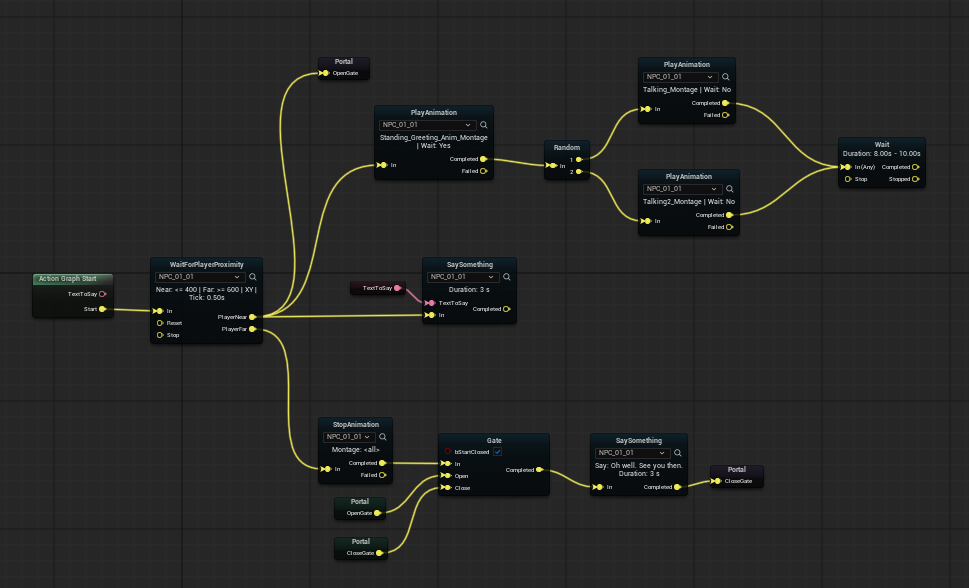

What is Scene Director?
Scene Director is a high-level, node-based scene orchestration plugin for Unreal Engine that lets you build believable in-game scenes, scripted interactions, NPC sequences, and dynamic encounters with a fast visual workflow — without sacrificing deep C++ extensibility.

Features
- Visual scene authoring: Build and maintain complex scene flow with modular Action Graphs instead of brittle one-off scripts.
- Custom gameplay integration: Launch scenes from gameplay events and drive your own mechanics through extensible nodes.
- World-driven orchestration: Use built-in world helpers like anchors, routes, and trigger volumes to connect logic directly to level layout.
- Runtime tools and debugging: Start scenes from console commands and inspect runtime behavior faster during iteration.
- State persistence support: Save and restore scene progress with built-in persistence patterns and serialization-ready node state.
- Production-ready scope: Keep Scene Director focused on deterministic scripted flow while your existing AI systems handle autonomous decision-making.
Next Steps
- Try it in action: Explore the example project to see Scene Director set up end-to-end.